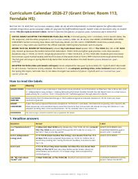
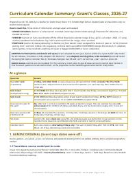
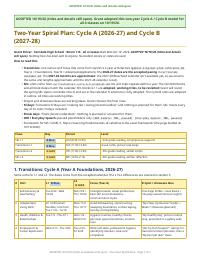
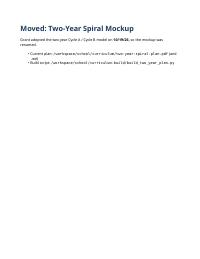
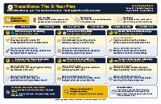
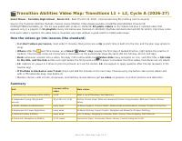
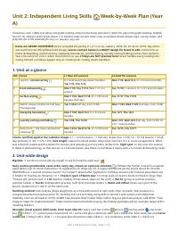

📆 Curriculum Calendar 2026-27
Day-by-day plan for all four classes, with Blue and Gold days.
The two-year plan, the day-by-day calendar, units and video map.

Day-by-day plan for all four classes, with Blue and Gold days.


How the units repeat and grow over two school years (Cycle A and B).



Which Transition Abilities video goes with which lesson.

Lesson-by-lesson plan for the cleaning and home-care unit.